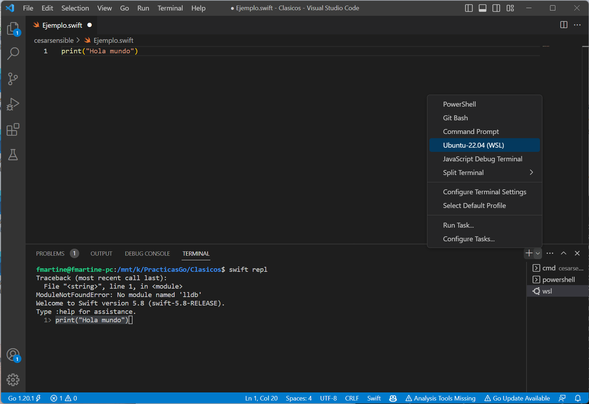

Seminario 2: Seminario de Swift¶
El lenguaje de programación Swift¶
Swift es un lenguaje de programación compilado, de propósito general y multi-paradigma desarrollado por Apple. Swift se presentó en la Conferencia de Desarrolladores de Apple (WWDC) de 2014. Durante el año 2014 se desarrolló la versión 1.2 y en la WWDC 2015 se presentó Swift 2, una actualización importante del lenguaje. Inicialmente fue un lenguaje propietario, pero el 3 de diciembre de 2015 se hizo open source bajo la licencia Apache 2.0, para las plataformas Apple y Linux. Los cambios en el lenguaje son propuestos y discutidos por la comunidad en un proceso denominado Swift evolution. En la actualidad se ha estabilizado la versión 4 del lenguaje y se está desarrollando la versión 5 que se presentará a finales de 2018.
La siguiente descripción se ha extraído del repositorio GitHub de Swift:
Swift es un lenguaje de programación de sistemas de alta eficiencia. Tiene una sintaxis limpia y moderna, ofrece acceso transparente a código y librerías existentes en C y Objective-C, y es seguro en el uso de memoria (memory safe).
Aunque está inspirado en Objective-C y en muchos otros lenguajes, Swift no es en si mismo un lenguaje derivado de C. Como lenguaje completo e independiente, Swift proporciona características fundamentales como control de flujo, estructuras de datos y funciones, junto con construcciones de alto nivel como objetos, protocolos, clausuras y genéricos. Swift se apoya en módulos, eliminando la necesidad de cabeceras y la duplicación de código que éstas inducen.
Ejecución de programas Swift¶
Es posible descargar el compilador de Swift en los sistemas operativos Mac (utilizando el entorno de desarrollo Xcode) o Linux.
Para la asignatura recomendamos utilizar una máquina Docker basada en la distribución Linux. La utilización de la máquina Docker hace posible su utilización en Windows y Mac sin instalar Xcode y permite un entorno unificado en el que hacer las prácticas.
A continuación explicamos las distintas formas de ejecutar programas Swift.
Ejecución en una máquina Docker¶
Docker es una tecnología que ha tenido una gran expansión en los últimos años. Permite construir máquinas virtuales ligeras que utilizan el mismo sistema operativo de la máquina host. Estas máquinas virtuales se denominan contenedores y, al compartir el propio sistema operativo en el que se están ejecutando, su gestión (construcción, arranque, parada, etc.) es muchísimo más rápida que las máquinas virtuales tradicionales.
Docker se controla desde línea de comando, desde la aplicación
Terminal de Mac o el PowerShell de Windows. Existen comandos docker
para descargar imágenes, lanzar y parar contenedores, montar
directorios de la máquina host en contenedores, etc. Nosotros sólo
utilizaremos el comando docker run para lanzar un contenedor, pero
te recomendamos que investigues y pruebes más comandos y que conozcas
mejor esta interesante tecnología. Puedes empezar por la guía Get
started with Docker.
Usaremos la imagen Docker
swift:4.0.3, que contiene el
comando swift necesario para compilar y ejecutar aplicaciones Swift.
Instalación de Docker
Debes instalar la versión de Docker CE (Community Edition) correspondiente a tu sistema operativo. Descárgalo desde esta página y sigue las instrucciones correspondientes a tu sistema operativo.
Instalación y ejecución de la imagen Swift
Una vez instalado Docker, abre un terminal y lanza el siguiente comando:
1 | $ docker pull swift:4.0.3 |
El comando descarga la imagen swift:4.0.3 a nuestro ordenador. Una
vez descargada lanzamos el contenedor con el siguiente comando:
1 | $ docker run --privileged -it --rm -v "${PWD}:/home" swift:4.0.3 /bin/bash
|
El contenedor arranca en muy pocos segundos y aparece su prompt, indicando que ya estás dentro de él y puedes ejecutar cualquier comando linux:
1 2 3 | root@97265a262a58:/# ls bin boot dev etc home lib lib64 media mnt opt proc root run sbin srv sys tmp usr var root@97265a262a58:/# |
Lanzamos el intérprete de Swift con el comando swift:
1 2 3 4 5 | root@97265a262a58:/# swift Welcome to Swift version 4.0.3 (swift-4.0.3-RELEASE). Type :help for assistance. 1> "hola".uppercased() $R0: String = "HOLA" 2> |
Una vez hayamos terminado de trabajar podemos salir del intérprete de Swift y del contenedor de la siguiente forma:
1 2 | 3> :quit root@97265a262a58:/# exit |
Directorio compartido entre el ordenador host y el contenedor
El argumento -v "${PWD}:/home" del comando docker run hace que el
contenedor monte el directorio actual en su directorio /home. De
esta forma podemos editar los programas Swift en el ordenador
anfitrión y ejecutarlos desde línea de comando en el contenedor.
Recomendamos utilizar un editor de textos orientado a la programación para editar los programas Swift en el ordenador anfitrión. Más adelante hablaremos de los editores Atom y Visual Studio Code, pero cualquier otro editor orientado a programación te puede valer (Sublime, Xcode en el Mac, etc.)
Vamos a probar a usar el directorio compartido:
- Nos movemos en el ordenador anfitrión a un directorio en el que trabajaremos con los programas en Swift:
1 2 | ~ $ cd swift ~/swift $ |
- Creamos en el directorio actual un programa llamado
holaMundo.swift.
Fichero holaMundo.swift:
1 2 3 4 5 6 7 8 9 10 11 12 13 14 15 | // Primer programa Swift var str = "Mensaje" str = "Hola mundo!" print(str) // Vamos a sumar dos números var firstNumber = 2 var secondNumber = 3 var totalSum = firstNumber + secondNumber firstNumber = firstNumber + 1 secondNumber = secondNumber + 1 totalSum = firstNumber + secondNumber print("El resultado de la suma es = \(totalSum)") |
- Arrancamos el contenedor swift:
1 | $ docker run --privileged -it --rm -v "${PWD}:/home" swift:4.0.3 /bin/bash
|
- Compilamos y ejecutamos el programa desde el contenedor, cambiando
al directorio
/home(el directorio compartido) y ejecutando el comando swift:
1 2 3 4 | root@3131534ce480:/# cd /home root@3131534ce480:~# swift holaMundo.swift Hola mundo! El resultado de la suma es = 7 |
-
Prueba a cambiar cualquier cosa en el programa desde el editor en el ordenador anfitrión y a volver a ejecutar el programa desde el contenedor. Verás que el directorio está realmente compartido y que el programa se ejecuta con las modificaciones que has introducido.
-
Cuando termines de trabajar con el contenedor Docker recuerda salir de él. El argumento
--rmdel comandodocker runhace que el contenedor se elimine al terminar su ejecución.
1 2 3 | root@3131534ce480:~# exit exit ~/swift $ |
Instalación en MacOS¶
Para instalar la última versión de Swift en MacOs debes instalar Xcode. Una vez instalado puedes ejecutar Swift desde el terminal.
Instalación en Linux Ubuntu¶
Existe una distribución oficial de Swift para Ubuntu de 64 bits (distribuciones 14.04, 16.04 y 16.10).
Puedes encontrar la información completa en la web oficial de Apple.
Brevemente, los pasos son los siguientes:
1 2 3 4 5 | $ sudo apt-get install clang libicu-dev // Descargar la versión y plataforma deseada (fichero swift-<VERSION>-<PLATFORM>.tar.gz) $ tar xzf swift-<VERSION>-<PLATFORM>.tar.gz // Esto crea el directorio usr/ en la localización del archivo // Actualizar el PATH o mover usr/bin/swift al directorio /usr/bin |
Editor de código¶
Para editar código Swift puedes usar cualquier editor orientado a programación. Aconsejamos Atom o Visual Studio Code. Ambos son multi-plataforma.
Atom
Atom es un editor modular en el que se pueden instalar múltiples extensiones desarrolladas por terceros. Para programar con swift es conveniente instalar los siguientes paquetes (en Preferencias > Settings > Install Packages):
language-swift: proporciona coloreado de sintaxis de Swiftplatformio-ide-terminal: proporciona la posibilidad de abrir un terminal en la parte inferior de la ventana.

Puedes consultar los conceptos básicos de Atom y el manual completo en este enlace.
Visual Studio Code
Es recomendable instalar la extensión Swift Language que realiza un
coloreado de sintaxis de Swift.
Para trabajar de forma más cómoda podemos abrir el terminal integrado Ver > Terminal integrado y lanzar el contenedor de Swift en ese terminal.

Puedes consultar los conceptos básicos de Visual Studio Code y el manual completo en este enlace.
Un tour de Swift¶
Aquí empieza el seminario de Swift. El texto que hay a continuación es una traducción del documento de Apple A Swift Tour en el que se presenta una introducción rápida a los conceptos fundamentales del lenguaje. En los temas siguientes de la asignatura (Tema 5 - Programación Funcional con Swift y Tema 6 - Programación Orientada a Objetos con Swift) profundizaremos en aspectos como funciones, genéricos, clases o protocolos.
Te recomendamos que crees un fichero llamado seminario.swift y que
vayas copiando y probando en él todos los ejemplos que aparecen a
continuación.
La tradición sugiere que el primer programa en un nuevo lenguaje debería imprimir las palabras "Hello, world!" en la pantalla. En Swift, esto puede hacerse con una única línea:
1 | print("Hello, world!") |
Si has escrito código en C o en Objective-C, esta sintaxis te parecerá
familiar. En Swift, esta línea de código es un programa completo. No
necesitas importar una biblioteca separada para funcionaliades como
entrada/salida o manejo de cadenas. El código escrito en el ámbito
global se usa como el punto de entrada del programa, por lo que no
necesitas una función main(). Tampoco tienes que escribir puntos y
comas al final de cada sentencia.
Este tour te da información suficiente para empezar a escribir código in Swift enseñándote cómo conseguir una variedad de tareas de programación. No te preocupes si no entiendes algo, todo lo que se introduce en este tour se explica en detalle en el resto del libro.
Valores simples
Usa let para crear una constante y var para crear una variable. No
es necesario que se conozca en tiempo de compilación el valor de una
constante, pero debes asignarle un valor exactamente una vez. Esto
significa que puedes usar constantes para nombrar un valor que
determinas una vez pero que usas en muchos lugares.
1 2 3 | var miVariable = 42 miVariable = 50 let miConstante = 42 |
Una constante o variable debe tener el mismo tipo que el valor que
quieres asignarle. Sin embargo, no siempre tienes que escribir el tipo
explícitamente. Cuando se proporciona un valor al crear una constante
o una variable el compilador infiere su tipo. En el ejemplo anterior,
el compilador infiere que myVariable es un entero porque su valor
inicial es un entero.
Si el valor inicial no proporciona información suficiente (o si no hay valor inicial), especifica el tipo escribiéndolo después de la variable, separándolo por dos puntos.
1 2 3 | let implicitoInteger = 70 let implicitoDouble = 70.0 let explicitoDouble: Double = 70 |
EXPERIMENTO
Crea una constante con el tipo explícito deFloaty un valor de 4.
Los valores nunca se convierten implícitamente a otro tipo. Si necesitas convertir un valor a un tipo diferente, construye explícitamente una instancia del tipo deseado.
1 2 3 | let etiqueta = "El ancho es " let ancho = 94 let anchoEtiqueta = etiqueta + String(ancho) |
EXPERIMENTO
Intenta eliminar la conversión aStringen la última línea. ¿Qué error obtienes?
Hay una forma aún más sencilla de incluir valores en cadenas: escribe
el valor entre paréntesis, y escribe una barra invertida (\) antes
de los paréntesis. Por ejemplo:
1 2 3 4 | let manzanas = 3 let naranjas = 5 let resumenManzanas = "Tengo \(manzanas) manzanas." let resumenFrutas = "Tengo \(manzanas + naranjas) frutas." |
EXPERIMENTO
Usa\()para incluir un cálculo en punto flotante en una cadena y para incluir el nombre de alguien en un saludo.
Crea arrays y diccionarios utilizando corchetes ([]), y accede a sus
elementos escribiendo el índice o la clave en los corchetes. Se
permite una coma después del último elemento.
1 2 3 4 5 6 7 8 | var listaCompra = ["huevos", "agua", "tomates", "pan"] listaCompra[1] = "botella de agua" var trabajos = [ "Malcolm": "Capitán", "Kaylee": "Mecánico", ] trabajos["Jayne"] = "Relaciones públicas" |
Para crear un array o diccionario vacío, usa la sintaxis de inicialización.
1 2 | let arrayVacio = [String]() let diccionarioVacio = [String: Float]() |
Si el tipo de información puede ser inferido, puedes escribir un array
vacío como [] y un diccionario vacío como [:]; por ejemplo, cuando
estableces un nuevo valor para una variable o pasas un argumento a una
función.
1 2 | listaCompra = [] trabajos = [:] |
Tuplas
Una tupla agrupa varios valores en un único valor compuesto.
1 | let http404Error = (404, "Not Found") |
El tipo de la tupla es (Int, String).
Para obtener los valores de la tupla podemos descomponerla. Si
queremos ignorar una parte podemos utilizar un subrrayado (_).
1 2 | let (statusCode, statusMensaje) = http404Error let (soloStatusCode, _) = http404Error |
También podemos acceder por posición:
1 | print("El código de estado es \(http404Error.0)") |
Control de flujo
Usa if y switch para hacer condicionales y usa for-in, for,
while y repeat-while para hacer bucles. Los paréntesis alrededor
de las condiciones o de la variable del bucle son opcionales. Se
requieren llaves alrededor del cuerpo.
1 2 3 4 5 6 7 8 9 10 | let puntuacionesIndividuales = [75, 43, 103, 87, 12] var puntuacionEquipo = 0 for puntuacion in puntuacionesIndividuales { if puntuacion > 50 { puntuacionEquipo += 3 } else { puntuacionEquipo += 1 } } print(puntuacionEquipo) |
En una sentencia if, el condicional debe ser una expresión booleana;
esto significa que código como if score { ... } es un error, no una
comparación implícita con cero.
Puedes usar if y let juntos para trabajar con valores que pueden
faltar. Estos valores se representan como opcionales. Un valor
opcional o bien contiene un valor o contiene nil para indicar que el
valor falta. Escribe una interrogación (?) después del tipo de un
valor para marcar el valor como opcional.
1 2 3 4 5 6 7 8 | var cadenaOpcional: String? = "Hola" print(cadenaOpcional == nil) var nombreOpcional: String? = "John Appleseed" var saludo = "Hola!" if let nombre = nombreOpcional { saludo = "Hola, \(nombre)" } |
EXPERIMENTO
CambianombreOpcionalanil. ¿Qué saludo obtienes? Añade una cláusulaelseque establezca un saludo diferente sinombreOpcionalesnil.
Si el valor opcional es nil, el condicional es false y el código
en las llaves se salta. En otro caso, el valor opcional se desenvuelve
y se asigna a la constante después del let, lo que hace que el valor
desenvuelto esté disponible dentro del bloque de código.
Otra forma de manejar valores opcionales es proporcionar un valor por
defecto usando el operador ??. Si falta el valor valor opcional, se
usa el valor por defecto en su lugar.
1 2 3 | let nombrePila: String? = nil let nombreCompleto: String = "John Appleseed" let saludoInformal = "¿Qué tal, \(nombrePila ?? nombreCompleto)?" |
Las sentencias switch permiten cualquier tipo de datos y una amplia
variedad de operaciones de comparación; no están limitados a enteros y
pruebas de igualdad.
1 2 3 4 5 6 7 8 9 | let verdura = "pimiento rojo" switch verdura { case "zanahoria": print("Buena para la vista.") case "lechuga", "tomates": print("Podrías hacer una buena ensalada.") default: print("Siempre puedes hacer una buena sopa.") } |
EXPERIMENTO
Intenta eliminar el caso por defecto. ¿Qué error obtienes?
Después de ejecutar el código dentro del caso que se empareja, el
programa sale de la sentencia switch. La ejecución no continua con
el siguiente caso, por lo que no hay necesidad de romper el switch
al final del código de cada caso.
Usa for-in para iterar sobre elementos en un diccionario
proporcionando una pareja de nombres para usar en cada pareja
clave-valor. Los diccionarios son colecciones desordenadas, por lo que
sus claves y valores se iteran en un orden arbitrario.
1 2 3 4 5 6 7 8 9 10 11 12 13 14 | let numerosInteresantes = [ "Primos": [2, 3, 5, 7, 11, 13], "Fibonacci": [1, 1, 2, 3, 5, 8], "Cuadrados": [1, 4, 9, 16, 25], ] var mayor = 0 for (clase, numeros) in numerosInteresantes { for numero in numeros { if numero > mayor { mayor = numero } } } print(mayor) |
EXPERIMENTO
Añade otra variable para seguir qué clase de número es el mayor.
Usa while para repetir un bloque de código hasta que una condición
cambie. La condición de un bucle puede estar también al final,
asegurando que el bucle se ejecuta al menos una vez.
1 2 3 4 5 6 7 8 9 10 11 | var n = 2 while n < 100 { n *= 2 } print(n) var m = 2 repeat { m *= 2 } while m < 100 print(m) |
Puedes definir un índice en un bucle usando ..< para construir un
rango de índices.
1 2 3 4 5 | var total = 0 for i in 0..<4 { total += i } print(total) |
Usa ..< para construir un rango que omita su valor superior, y usa
... para construir un rango que incluya ambos valores.
Funciones y clausuras
Usa func para declarar una función. Usa -> para separar los
nombres de los parámetros y sus tipos del tipo devuelto de la
función.
1 2 3 4 | func saluda(nombre: String, dia: String) -> String { return "Hola \(nombre), hoy es \(dia)." } saluda(nombre: "Bob", dia: "Martes") |
EXPERIMENTO
Elimina el parámetro día. Añade un parámetro para incluir la comida de hoy en el saludo.
Por defecto, las funciones usan los nombres de los parámetros como
etiquetas de los argumentos. Es posible definir una etiqueta
escribiéndola antes del nombre del parámetro, o no usar etiqueta
escribiendo _:
1 2 3 4 | func saluda(_ nombre: String, el dia: String) -> String { return "Hola \(nombre), hoy es \(dia)." } saluda("Bob", el: "Martes") |
Las funciones pueden devolver cualquier tipo de dato, como tuplas.
1 2 3 4 5 6 7 8 9 10 11 12 13 14 15 16 17 18 19 20 | func calculaEstadisticas(puntuaciones: [Int]) -> (min: Int, max: Int, sum: Int) { var min = puntuaciones[0] var max = puntuaciones[0] var sum = 0 for puntuacion in puntuaciones { if puntuacion > max { max = puntuacion } else if puntuacion < min { min = puntuacion } sum += puntuacion } return (min, max, sum) } let estadisticas = calculaEstadisticas(puntuaciones: [5, 3, 100, 3, 9]) print(estadisticas.sum) print(estadisticas.2) |
Las funciones también pueden tener un número variable de argumentos, agrupándose todos ellos en un array.
1 2 3 4 5 6 7 8 9 | func suma(numeros: Int...) -> Int { var suma = 0 for numeros in numeros { suma += numeros } return suma } print(suma()) print(suma(numeros: 42, 597, 12)) |
EXPERIMENTO
Escribe una función que calcule la media de sus argumentos.
Las funciones pueden anidarse. Las funciones pueden acceder variables declaradas en la función exterior. Puedes usar funciones anidadas para organizar el código en una función que es larga o complicada.
1 2 3 4 5 6 7 8 9 | func devuelveQuince() -> Int { var y = 10 func suma() { y += 5 } suma() return y } print(devuelveQuince()) |
Las funciones son un tipo de primera clase. Esto significa que una función puede devolver otra función como resultado.
1 2 3 4 5 6 7 8 | func construyeIncrementador() -> ((Int) -> Int) { func sumaUno(numero: Int) -> Int { return 1 + numero } return sumaUno } var incrementa = construyeIncrementador() print(incrementa(7)) |
Podemos modificar el ejemplo devuelveQuince para que se devuelva una
versión modificada de la función suma. Llamamos a la función
devuelveSuma.
1 2 3 4 5 6 7 8 9 10 11 12 | func devuelveSuma() -> (() -> Int) { var y = 10 func suma() -> Int { y += 5 return y } return suma } let f = devuelveSuma() print(f()) print(f()) |
Una función puede tomar otra función como uno de sus argumentos.
1 2 3 4 5 6 7 8 9 10 11 12 13 | func cumpleCondicion(lista: [Int], condicion: (Int) -> Bool) -> Bool { for item in lista { if condicion(item) { return true } } return false } func menorQueDiez(numero: Int) -> Bool { return numero < 10 } var numeros = [20, 19, 7, 12] print(cumpleCondicion(lista: numeros, condicion: menorQueDiez)) |
Las funciones son en la realidad un caso especial de clausuras:
bloques de código que pueden ser llamados después. El código en la
clausura tiene acceso a cosas como variables y funciones que estaban
disponibles en el ámbito (scope) en el que se creó la clausura,
incluso si la clausura está en un ámbito distinto cuando se
ejecuta; ya viste un ejemplo de esto con las funciones
anidadas. Puedes escribir una clausura rodeando el código con llaves
({}). Usa in para separar los argumentos del cuerpo.
1 2 3 4 5 | numeros.map({ (numero: Int) -> Int in let resultado = 3 * numero return resultado }) |
EXPERIMENTO
Reescribe la clausura para que devuelva cero para todos los números impares.
Tienes bastantes opciones para escribir clausuras de forma más concisa. Cuando ya se conoce el tipo de una clausura puedes omitir el tipo de sus parámetros, el tipo devuelto o ambos. Las clausuras escritas en una línea devuelven implícitamente el valor de su única sentencia.
1 2 | let numerosMapeados = numeros.map({ numero in 3 * numero }) print(numerosMapeados) |
Puedes referirte a los parámetros por número en lugar de por nombre; este enfoque es especialmente útil en clausuras muy cortas. Una clausura pasada como último argumento puede aparecer inmediatamente después de los paréntesis. Cuando una clausura es el único argumento de una función, puedes omitir los paréntesis por completo.
1 2 | let numerosOrdenados = numeros.sorted { $0 > $1 } print(numerosOrdenados) |
Objetos y clases
Usa class seguido por el nombre de la clase para crear una
clase. Una declaración de una propiedad en una clase se escribe de la
misma forma que la declaración de una constante o una variable,
excepto que está en el contexto de una clase. De la misma forma, las
declaraciones de los métodos se escriben de la misma forma que las
funciones.
1 2 3 4 5 6 | class Figura { var numeroDeLados = 0 func descripcionSencilla() -> String { return "Una figura con \(numeroDeLados) lados." } } |
EXPERIMENTO
Añade una propiedad constante conlet, y añade otro método que tome un argumento.
Crea una instancia de una clase poniendo paréntesis después del nombre de la clase. Usa la sintaxis de punto para acceder a las propiedades y los métodos de la instancia.
1 2 3 | var figura = Figura() figura.numeroDeLados = 7 var descripcionFigura = figura.descripcionSencilla() |
A esta versión de la clase Figura le falta algo importante: un
inicializador para preparar la clase cuando se crea una instancia. Usa
init para crear uno.
1 2 3 4 5 6 7 8 9 10 11 12 | class FiguraConNombre { var numeroDeLados: Int = 0 var nombre: String init(nombre: String) { self.nombre = nombre } func descripcionSencilla() -> String { return "Una figura con \(numeroDeLados) lados." } } |
Fíjate en cómo se utiliza self para distinguir la propiedad nombre
del argumento nombre al inicializador. Los argumentos al
inicializador se pasan como una llamada a una función cuando creas una
instancia de la clase. Cada propiedad necesita un valor asignado; ya
sea en su declaración (como numeroDeLados) o en el inicializador
(como nombre).
Usa deinit para crear un desinicializador si necesitas realizar
alguna limpieza antes de que el objeto sea eliminado.
Las subclases incluyen el nombre de su subclase después del nombre de la clase, separado por una coma. No hay ningún requisito de que las clases deban ser subclases de alguna clase raíz, por lo que puedes omitir una superclase si así lo necesitas.
Los métodos en una subclase que sobreescriben la implementación de la
superclase se marcan con override; la sobreescritura de un método
por accidente, sin override, se detecta por el compilador como un
error. El compilador también detecta métodos con override que
realmente no sobreescriben ningún método de la superclase.
1 2 3 4 5 6 7 8 9 10 11 12 13 14 15 16 17 18 19 20 | class Cuadrado: FiguraConNombre { var longitudLado: Double init(longitudLado: Double, nombre: String) { self.longitudLado = longitudLado super.init(nombre: nombre) numeroDeLados = 4 } func area() -> Double { return longitudLado * longitudLado } override func descripcionSencilla() -> String { return "Un cuadrado con lados de longitud \(longitudLado)." } } let test = Cuadrado(longitudLado: 5.2, nombre: "Mi cuadrado de prueba") print(test.area()) print(test.descripcionSencilla()) |
EXPERIMENTO
Construye otra subclase deFiguraConNombrellamadaCirculoque tome un radio y un nombre como argumentos de su inicializador. Implementa un métodoarea()ydescripcionSencilla()en la claseCirculo.
Además de propiedades simples que se almacenan, las propiedades pueden tener un getter y un setter.
1 2 3 4 5 6 7 8 9 10 11 12 13 14 15 16 17 18 19 20 21 22 23 24 25 26 | class TrianguloEquilatero: FiguraConNombre { var longitudLado: Double = 0.0 init(longitudLado: Double, nombre: String) { self.longitudLado = longitudLado super.init(nombre: nombre) numeroDeLados = 3 } var perimetro: Double { get { return 3.0 * longitudLado } set { longitudLado = newValue / 3.0 } } override func descripcionSencilla() -> String { return "Un triangulo equilátero con lados de longitud \(longitudLado)." } } var triangulo = TrianguloEquilatero(longitudLado: 3.1, nombre: "un triángulo") print(triangulo.perimetro) triangulo.perimetro = 9.9 print(triangulo.longitudLado) |
En el setter de perimetro, el nuevo valor tiene el nombre
implícito newValue. Puedes proporcionar un nombre explícito en el
paréntesis después de set.
Date cuenta de que el inicializador de la clase TrianguloEquilatero
tiene tres pasos diferentes:
- Establecer el valor de las propiedades que declara la subclase.
- Llamar al inicializador de la superclase.
- Cambiar el valor de las propiedades definidas por la superclase. Cualquier trabajo adicional que use métodos, getters o setters puede hacerse también en este punto.
Si no necesitas calcular la propiedad pero necesitas proporcionar
código que se ejecuta antes y después de establecer un nuevo valor,
usa willSet y didSet. El código que proporcionas se ejecuta cada
vez que el valor cambia fuera de un inicializador. Por ejemplo, la
siguiente clase se asegura de que la longitud del lado de su triángulo
siempre es la misma que la longitud del lado de su cuadrado.
1 2 3 4 5 6 7 8 9 10 11 12 13 14 15 16 17 18 19 20 21 | class TrianguloYCuadrado { var triangulo: TrianguloEquilatero { willSet { cuadrado.longitudLado = newValue.longitudLado } } var cuadrado: Cuadrado { willSet { triangulo.longitudLado = newValue.longitudLado } } init(tamaño: Double, nombre: String) { cuadrado = Cuadrado(longitudLado: tamaño, nombre: nombre) triangulo = TrianguloEquilatero(longitudLado: tamaño, nombre: nombre) } } var trianguloYCuadrado = TrianguloYCuadrado(tamaño: 10, nombre: "Otra figura de prueba") print(trianguloYCuadrado.cuadrado.longitudLado) print(trianguloYCuadrado.triangulo.longitudLado) trianguloYCuadrado.cuadrado = Cuadrado(longitudLado: 50, nombre: "Cuadrado mayor") print(trianguloYCuadrado.triangulo.longitudLado) |
Cuando trabajamos con valores opcionales, puedes escribir ? antes de
operaciones como métodos, propiedades y subíndices. Si el valor antes
del ? es nil, todo lo que hay después se ignora y el valor de la
expresión completa es nil. En otro caso, el valor opcional se
desenvuelve, y todo lo que hay después del ? se realiza sobre el
valor desenvuelto. En ambos casos, el valor de la expresión completa
es un valor opcional.
1 2 | let cuadradoOpcional: Cuadrado? = Cuadrado(longitudLado: 2.5, nombre: "Cuadrado opcional") let longitudLado = cuadradoOpcional?.longitudLado |
Enumeraciones y estructuras
Usa enum para crear una enumeración. Como las clases y otros tipos
con nombre, las enumeraciones pueden tener métodos asociados.
1 2 3 4 5 6 7 8 9 10 11 12 13 14 15 16 17 18 19 20 21 | enum Valor: Int { case uno = 1 case dos, tres, cuatro, cinco, seis, siete, ocho, nueve, diez case sota, caballo, rey func descripcionSencilla() -> String { switch self { case .uno: return "as" case .sota: return "sota" case .caballo: return "caballo" case .rey: return "rey" default: return String(self.rawValue) } } } let carta = Valor.uno let valorBrutoCarta = carta.rawValue |
EXPERIMENTO
Escribe una función que compare dos valoresValora través de una comparación de sus valores brutos.
Por defecto, Swift asigna los valores brutos comenzando en cero e
incrementándolos por uno cada vez, pero puedes cambiar esta conducta
especificando explícitamente los valores. En el ejemplo anterior, a
As se le da un valor bruto de 1 y el resto de los valores brutos
se asignan en orden. Puedes también usar cadenas o números en punto
flotante como valores brutos de una enumeración. Utiliza la propiedad
rawValue para acceder al valor bruto de una enumeración.
Usa el inicializador para construir un valor de una enumeración a
través de un valor bruto. Si el valor bruto no existe, el
inicializador devolverá nil.
1 2 3 4 | if let valorConvertido = Valor(rawValue: 3) { let descripcionTres = valorConvertido.descripcionSencilla() print(descripcionTres) } |
Los valores case de una enumeración son valores reales, no una forma nueva de escribir sus valores brutos. De hecho, en los casos en los que no hay un valor bruto que tenga sentido, no tienes que proporcionar uno.
1 2 3 4 5 6 7 8 9 10 11 12 13 14 15 16 17 | enum Palo { case oros, bastos, copas, espadas func descripcionSencilla() -> String { switch self { case .oros: return "oros" case .bastos: return "bastos" case .copas: return "copas" case .espadas: return "espadas" } } } let copas = Palo.copas let descripcionCopas = copas.descripcionSencilla() |
EXPERIMENTO
Añade un métodocolor()aPaloque devuelva "agresivo" para bastos y espadas y devuelva "reflexivo" para oros y copas.
Date cuenta de las dos formas en las que nos referimos al caso copas
de la enumeración anterior: cuando se asigna un valor a la constante
copas, nos referimos al caso de la enumeración Palo.copas usando
su nombre completo porque la constante no tiene un tipo explícito
especificado. Dentro del switch, nos referimos al caso de la
enumeración con la forma abreviada .copas porque ya se sabe que el
valor de self es un Palo. Puedes usar la forma abreviada en
cualquier momento en que el tipo del valor ya se conozca.
Una instancia de un caso de enumeración puede tener valores asociados con la instancia. Instancias del mismo caso de enumeración pueden tener asociados valores diferentes. Proporcionas los valores asociados cuando creas la instancia. Los valores asociados y los valores brutos son distintos: el valor bruto de un caso de enumeración es el mismo para todas las instancias, mientras que proporcionas el valor asociado cuando defines la enumeración.
Por ejemplo, considera el caso de realizar una petición a un servidor de la hora de salir el sol y de la hora de ponerse el sol. El servidor responde con la información o responde con alguna información de error.
1 2 3 4 5 6 7 8 9 10 11 12 13 14 | enum RespuestaServidor { case resultado(String, String) case error(String) } let exito = RespuestaServidor.resultado("6:00 am", "8:09 pm") let fallo = RespuestaServidor.error("Sin queso.") switch exito { case let .resultado(salidaSol, puestaSol): print("La salida del sol es a las \(salidaSol) y la puesta es a \(puestaSol).") case let .error(error): print("Fallo... \(error)") } |
EXPERIMENTO
Añade un tercer caso alServerResponsey al switch.
Date cuenta de cómo la hora de salir el sol y de ponerse el sol se
extraen del ServerResponse como parte del emparejamiento entre el
valor y los casos switch.
Usa struct para crear una estructura. Las estructuras comparten
muchas características de las clases, incluyendo métodos e
inicializadores. Una de las diferencias más importantes entre
estructuras y clases es que las estructuras siempre se copian cuando
las pasas en tu código, mientras que las clases se pasan por
referencia.
1 2 3 4 5 6 7 8 9 | struct Carta { var valor: Valor var palo: Palo func descripcionSencilla() -> String { return "El \(valor.descripcionSencilla()) de \(palo.descripcionSencilla())" } } let tresDeEspadas = Carta(valor: .tres, palo: .espadas) let descripcionTresDeEspadas = tresDeEspadas.descripcionSencilla() |
EXPERIMENTO
Añade un método aCartaque cree un mazo completo de cartas, con una carta de cada combinación de valor y palo.
Protocolos y extensiones
Usa protocol para declarar un protocolo.
1 2 3 4 | protocol ProtocoloEjemplo { var descripcionSencilla: String { get } mutating func ajustar() } |
Clases, enumeraciones y estructuras pueden todas adoptar protocolos.
1 2 3 4 5 6 7 8 9 10 11 12 13 14 15 16 17 18 19 20 | class ClaseSencilla: ProtocoloEjemplo { var descripcionSencilla: String = "Una clase muy simple." var otraPropiedad: Int = 69105 func ajustar() { descripcionSencilla += " Ahora 100% ajustada." } } var a = ClaseSencilla() a.ajustar() let descripcionA = a.descripcionSencilla struct EstructuraSencilla: ProtocoloEjemplo { var descripcionSencilla: String = "Una estructura sencilla" mutating func ajustar() { descripcionSencilla += " (ajustada)" } } var b = EstructuraSencilla() b.ajustar() let descripcionB = b.descripcionSencilla |
EXPERIMENTO
Escribe una enumeración que cumpla el protocolo.
Date cuenta del uso de la palabra clave mutating en la declaración
de SimpleStructure para marcar el método que modifica la
estructura. La declaración de SimpleClass no necesita que se marquen
como mutadores ninguno de sus métodos porque los métodos en una clase
siempre pueden modificar la clase.
Usa extension para añadir funcionalidad a un tipo existente, como
métodos nuevos y propiedades calculadas. Puedes utilizar una extensión
para añadir un cumplimiento de un protocolo a un tipo que se declara
en otro lugar, o incluso a un tipo que hayas importado de una
biblioteca o un framework.
1 2 3 4 5 6 7 8 9 | extension Int: ProtocoloEjemplo { var descripcionSencilla: String { return "El número \(self)" } mutating func ajustar() { self += 42 } } print(7.descripcionSencilla) |
Otro ejemplo usando una función:
1 2 3 4 5 6 7 8 9 | extension Int { func repetir(task: () -> ()) { for _ in 0...self { task() } } } 10.repetir {print("Hola")} |
EXPERIMENTO
Escribe una extensión para el tipoDoubleque añada una propiedadabsoluteValue.
Puedes usar un nombre de un protocolo de la misma forma que cualquier otro tipo con nombre; por ejemplo, para crear una colección de objetos que tienen tipos diferentes pero que cumplen un único protocolo. Cuando trabajas con valores cuyo tipo es un tipo de protocolo, no están disponibles los métodos fuera del protocolo.
1 2 3 | let valorProtocolo: ProtocoloEjemplo = a print(valorProtocolo.descripcionSencilla) // print(valorProtocolo.otraPropiedad) // Descomentar para comprobar el error |
Incluso aunque la variable valorProtocolo tenga un tipo en tiempo de
ejecución de ClaseSencilla, el compilador lo trata como uno del tipo
ProtocoloEjemplo. De esta forma no es posible acceder
accidentalmente a métodos o propiedades que implemente la clase de
forma adicional al cumplimiento del protocolo.
Genéricos
Escribe un nombre dentro de paréntesis angulares para construir una función o un tipo genérico.
1 2 3 4 5 6 7 8 | func itemRepetido<Item>(_ item: Item, numeroDeVeces: Int) -> [Item] { var resultado = [Item]() for _ in 0..<numeroDeVeces { resultado.append(item) } return resultado } print(itemRepetido("knock", numeroDeVeces:4)) |
Puedes hacer formas genéricas de funciones y métodos, así como de clases, enumeraciones y estructuras.
1 2 3 4 5 6 7 | // Reimplementamos el tipo Optional de la biblioteca estándar de Swift enum ValorOpcional<Envuelto> { case ninguno case alguno(Envuelto) } var posibleInteger: ValorOpcional<Int> = .ninguno posibleInteger = .alguno(100) |
Es posible usar where justo antes del cuerpo para especificar una
lista de requisitos. Por ejemplo, para requerir el tipo que debe
implementar un protocolo, para requerir que dos tipos sean los mismos
o para requerir que una clase tenga una superclase determinada.
1 2 3 4 5 6 7 8 9 10 11 12 13 | func elementosComunes<T: Sequence, U: Sequence>(_ izq: T, _ der: U) -> Bool where T.Iterator.Element: Equatable, T.Iterator.Element == U.Iterator.Element { for izqItem in izq { for derItem in der { if izqItem == derItem { return true } } } return false } print(elementosComunes([1, 2, 3], [3])) |
Si se escribe <T: Equatable> es equivalente a escribir <T> ... where T: Equatable.
Bibliografía y referencias¶
- Documentación sobre Swift
- Swift Open Source
- Repositorio
swiften GitHub: repositorio principal de Swift, que contiene el código fuente del compilador Swift, la biblioteca estándar y SourceKit. - Repositorio
swift-evolutionen GitHub: documentos relacionados con la evolución continua de Swift, incluyendo objetivos de las próximas versiones y propuestas de cambios y extensiones de Swift.
- Repositorio
Lenguajes y Paradigmas de Programación, curso 2018-19
Departamento Ciencia de la Computación e Inteligencia Artificial, Universidad de Alicante